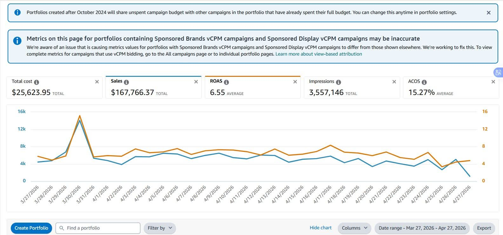

This Amazon PPC success reflects a strategic and performance-driven approach focused on maximizing profitability while maintaining long-term growth. By implementing a well-structured campaign strategy, optimizing bids based on real-time data, and continuously refining keyword targeting, advertising performance was significantly improved without sacrificing scalability. The account achieved an impressive ACOS of 15.27%, demonstrating strong control over advertising costs and efficient budget utilization. Through a carefully designed and optimized campaign structure, wasteful spending was minimized while high-converting search terms received greater focus. Continuous keyword research and bid adjustments helped improve ad relevance, increase conversions, and maximize return on investment. Rather than relying on short-term tactics, the strategy focused on sustainable and profitable growth. Every optimization decision was backed by data analysis, allowing campaigns to scale efficiently while maintaining strong profitability. This approach resulted in improved ad efficiency, better overall account performance, and a stronger foundation for long-term success on Amazon.